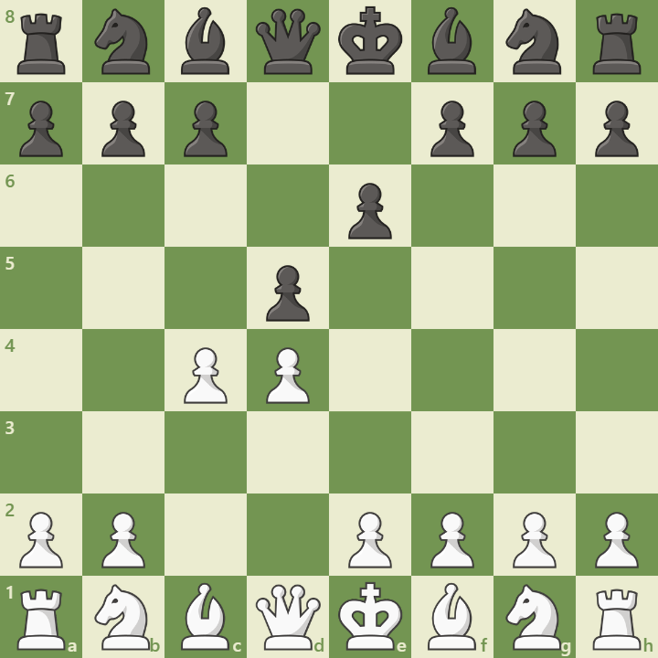

Opening Diagram

Position after 1.d4 d5 2.c4 e6
Overview
The Queen’s Gambit Declined (QGD) arises after 1.d4 d5 2.c4 e6. It is one of the oldest and most respected defenses against 1.d4, favored by world champions like Capablanca, Karpov, and Kasparov. Black declines the gambit pawn and reinforces the center with a solid structure.
Main Ideas
- Control of the center: Black maintains central tension with ...d5 and ...e6.
- Piece development: Knights to f6 and c6, bishop to e7 or b4, and castling kingside.
- Pawn structure: The d5–e6–c6 triangle gives Black a solid base but limits the light-squared bishop.
- Strategic plans: White often plays Nf3, Nc3, Bg5, e3, and Rc1 aiming for pressure on d5 and kingside initiative.
Popular Variations
- Orthodox Defense: 3.Nc3 Nf6 4.Bg5 Be7
- Tarrasch Defense: 3.Nc3 c5
- Lasker Defense: 4.Bg5 h6 5.Bxf6 Bxf6
- Cambridge Springs: 4.Bg5 Nbd7 5.e3 c6 6.Nf3 Qa5
Model Game: Topalov vs Anand
This World Championship clash featured deep preparation in the QGD. Anand used the Lasker Defense to neutralize Topalov’s initiative and transitioned into a favorable endgame.
Full analysis here